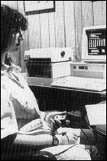

|
 A PK tester tries to direct a randomly- moving line on a computer display. 6: Who Can Do It? Some individuals seem to have greater success at PK tests than others. Jahn and Dunne claim that of the 150 people who have participated in their experiments over the years, roughly 68 percent of their participants have been successful in moving random event generators in the intended direction. "All of them were volunteers and none claimed to have any psychic abilities," said Dunne. "Because we're an engineering lab, we're not as interested in the specific abilities of individual operators, but whether or not certain mechanical systems have vulnerabilities. And so we were more interested in what would happen with normal people." Jahn and Dunne tracked individual operator statistics by gender and found a significant difference between their abilities. Men achieved results closer to their intentions, but the effects were smaller than those achieved by women. When operators were paired to see if their combined efforts would have a greater effect, the results revealed another interesting trend. In pairs where operators were of the same sex, there were no measurable effects. Their results were statistically within the realm of chance. Opposite-sex pairs, however, achieved statistically larger results, and even larger yet when couples were personally involved. Radin and his team have developed a number of PK tests. In one, operators try to get a randomly moving robot arm to drop an M&M into a cup. If successful, the operator can then eat the candy. Radin said operators are more successful if they can imagine that the robot's arm is an extension of their own bodies. Controlled by a random event generator, the robot arm completes the task on its own in an average of 25 moves. Radin used the robot's self-controlled attempts as a baseline to measure the power of the operators' intentions. While some people could get the candy in the cup in only two steps, on average the human operators were only slightly more efficient than the computerized robot, requiring an average of 24 moves. While Radin said the results are not statistically significant, they have helped to create a standard battery of tests. Now, a test administrator can compare one person to another for psychic ability, or the same person's ability on different days. Radin's experiments could show how environmental factors affect psychokinetic ability. He charted changes in 150 environmental variables for each day of the experiment. Radin's broad definition of"environment" included variables ranging from the Earth's geomagnetic field and barometric pressure changes to the number of calls to 911 and payouts on the lotto. "Our final conclusion was yes, we could predict performance," said Radin. The correlation between the actual and predicted performance was 16 percent of the variance. In other words, Radin's lab could explain, or predict, 16 percent of the successful attempts. Radin put his numbers in context: "Now 16 percent may not sound great, but we're explaining the variation in something that conventional theories say should be zero percent. There shouldn't be any way to predict how well the operators will do because their results should be attributable to chance." Radin said that his lab has still not collected enough data to measure the different dimensions of operators' abilities. For that, he said, he'll require thousands of tests -- again, similar to the number needed for personality tests. But of the robotic arm experiments, he said, "People who did well we knew would do well. They tend to be extroverted, interested, and believers. They're often into meditation, tai chi, abstract math, or archery -- something that gives them mental discipline." Whether the experiment involved micro-PK or remote viewing, Radin found that people who were used to exerting mental self discipline could do the task better. "In our society, we're not trained to use our minds this way. For most of us, the world is automatic and we don't have to focus," he said. In addition to mental discipline, Radin cites a psychological trait called "openness" as a contributor to PK success. "People who like to try new things and are open to new ideas do better," he said. "People who like the status quo are low on openness scale." As for the environment, Radin said it can affect even world-class performers. The time of day, what the operator ate, how he or she felt, the barometric pressure, and the temperature all conspire to vary our cognitive abilities. Copyright (c) 1997 Llewellyn Worldwide, Ltd. http://www.llewellyn.com
|